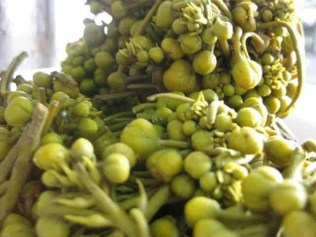

ဆေးဖက်ဝင် မဲဇလီပင်ဖူး

ရုက္ခဗေဒအမည်အရCassiasiamea Linn မျိုးရင်းဖြစ်ပါတယ်။ ၁ဝဝ ဂရမ်အလေးချိန်ရှိ တဲ့ မဲဇလီဖူးနှင့် အရွက်တို့ကို ဆေးသိပ္ပံနည်းအရ ဓာတ်ခွဲစမ်းသပ်ကြည့်ရာ၊ ကယ်လိုရီ ၁ဝဝ၊ ပရိုတင်း ၇ ဒသမ ၁ ဂရမ်၊ အဆီဓာတ် ၁ ဒသမ
သုည ဂရမ်၊ ကစီဓာတ် ၁၇ ဒသမ ၉ ဂရမ်၊ ထုံးဓာတ် ၄၄ ဒသမ ၁ မီလီဂရမ်၊ သံဓာတ် ၁၇ ဒသမ သုညမီလီဂရမ်၊ ဗီတာမင် အေအိုင်ယူ ၁၄၅ဝဝ၊ ဗီတာမင်ဘီဝမ်း သုည ဒသမ ၄ မီလီဂရမ်၊ ဗီတာမင်ဘီတူး သုည ဒသမ ၆၉ မီလီ
ဂရမ်၊ နိုင်ယာစင် ၁ ဒသမ ၃ မီလီဂရမ်၊ ဗီတာမင်စီ ၁ဝ၁ မီလီဂရမ်တို ့ အသီးသီးပါရှိကြပါ တယ်။ ဒါ့အပြင် ဟင်းသီးဟင်းရွက်များမှာ ရှား
ရှားပါးပါးတွေ့ရခဲသော ဆေးဖက်ဝင် glycosides, terpenoids, tannins, saponins, flavonoids နှင့်steroids တွေလဲ ပါရှိကြပါ သေးတယ်။
(၁) ချို၊ ဆိမ့်၊ ဖန်အရသာ သုံးမျိုးရောပြွမ်း၍ ခါးသက်သက်အရသာ လွှမ်းမိုးသော မဲဇလီပင်မှာ အာပေါဓာတ်ကြီးစိုး၍ ဝါယောဓာတ် ပူးတွဲပါရှိနေတာကြောင့် ရှေးတိုင်းရင်း သမားတော်ကြီးများက မြန်မာ့ရိုးရာဆေးမြီးတိုအဖြစ် အိပ်
မပျော်ခြင်း၊ သွေးတက်ခြင်း၊ ရုပ်ရည်ခန်းခြောက်ခြင်း၊ အသက်ရှု၊ပြွန်ချောင်း ရောင်ခြင်း၊ ချောင်းခြောက်ဆိုးခြင်းစတဲ့ ရောဂါများအတွက် ကုသပေးခဲ့ကြပါ တယ်။
(၂) အိန္ဒိယနိုင်ငံမှာတော့ ကာလသားရောဂါ ရှန်ကာနာကို မဲဇလီရွက်ဖြင့် ကုသလေ့ရှိပါတယ်။
(၃) သမ်းဝေပြီး အိပ်မပျော်ခြင်းအတွက် မဲဇလီဖူးကိုသုပ်၍စားက နှစ်နှစ်ခြိုက်
ခြိက် အိပ်ပျော်စေနိုင်ပါတယ်။
(၄) ပါးစပ်အတွင်း အပူထွက်ခြင်း၊ သွားဖုံး ရောင်ခြင်းတို့အတွက် မဲဇလီရွက်နှင့် အပွင့်တို့ကို ခပ်ကျကျပြုတ်၍ ငုံပေးပါက သက်သာပျောက်ကင်းနိုင်ပါ တယ်။
(၅) မျက်စိနာခြင်းအတွက် မဲဇလီမြစ်ကို သွေး၍ မျက်စိတဝိုက်ကွင်းပေးပါ။
(၆) ကနခိုစေ့စား၍ ဝမ်းသွားလွန်ခြင်း အတွက် မဲဇလီမြစ်ကို ထန်းလျက်နှင့်
ပြုတ်၍ သောက်ပေးခြင်းဖြင့် ဝမ်းရပ် တန့်ပါလိမ့်မယ်။
(၇) ချောင်းဆိုး၊ ရင်ကျပ်၊ လည်ချောင်းနာ ခြင်းတို့အတွက် မဲဇလီရွက်နှင့် မုရား ကြီးရွက်တို့ကိုဆတူရော၍ သုံးခွက်တစ် ခွက်တင်ကြိုပြီးနောက် ငုံပေးခြင်းဖြင့် သက်သာပျောက်ကင်းနိုင်ပါတယ်။
(၈) ကလေးများ သန်ထပါက မဲဇလီရွက်လတ်လတ်ဆတ်ဆတ် ထောင်းရည် (သတ္ထရည်)နှင့် သံပရာရည် ရောစပ် တိုက်ပေးခြင်းဖြင့် သန်ကျစေနိုင်ပါ တယ်။
(၉) ဝမ်းချုပ်ပြီး စမြင်းခံခြင်းအတွက် မဲဇလီဖူးကိုပြုတ်၍ တို့စရာအဖြစ် စားပေးပါက ဝမ်းမှန်၍ လေသက်စေနိုင်ပါ တယ်။
(၁ဝ) ကင်း၊ ပုရွက်ဆိတ် စတဲ့ အဆိပ်ရှိ သတ္တ ဝါတွေ အကိုက်ခံရပါက၊ မဲဇလီရွက်ကို ကြိတ်၍ ဒဏ်ရာပေါ် အုံပေးပါက အဆိပ်ပြေစေပါတယ်။
(၁၁) နှင်းခူအစိုအတွက် မဲဇလီရွက်ကို သံပရာရည်နှင့်ကြိတ်၍ နှင်းခူပေါ်အုံ
ခြင်း၊ မဲဇလီရွက်ပြုတ်ရည်ဖြင့် ဖန်ရည်ဆေးပေးခြင်းတို့ ပြုလုပ်ပေးပါ။
(၁၂) အမျိုးသမီးများ မျက်နှာပေါ်တွင် မီးယပ်ကွက်ထွက်ခြင်းအတွက် မဲဇလီပွင့် (သို ့မဟုတ်) အရွက်ကို အခြောက်လှမ်း အမှုန့်ကြိတ်၍ ရေဖြင့်ဖျော်ပြီး လိမ်း ပေးပါ။
(၁၃) မဲဇလီရွက်ပြုတ်ရည်ဖြစ်စေ၊ အရွက်ကို အခြောက်လှမ်း အမှုန့်ကြိတ်၍ဖြစ်စေ ပျားရည်နှင့် ရောစပ်စားပေးပါက သွေး သားသန့်စင်၍ အားအင်ပြည့်ဖြိုးစေပါ တယ်။
(၁၄) မဲဇလီ ဖူးထဲတွင်ပါရှိသော သဘာဝအခါးဓာတ်က အသည်းအားကောင်း စေပါတယ်။ (၁၅) အစာချေစနစ်ကို ကောင်းမွန်စေရုံ သာမက၊ ပျို့အန်ခြင်း၊ အက်စစ်ဆန်တက်၍ လေချဉ်တက်ခြင်း၊ ရင်ပူခြင်း တို့ကို သက်သာစေပါတယ်။
(၁၆) ခန္ဓာကိုယ်အတွက်လိုအပ်သော ပရို တင်းဓာတ်ကို ဖြည့်တင်းပေးပြီး၊ ကိုယ်ခန္ဓာကြီးထွားမှုကို အထောက်အပံ့ပေး ပါတယ်။
(၁၇) အူမကြီးကို ကောင်းစွာအလုပ်လုပ်စေလို့၊ ဝမ်းပျော့ပျော့သွားစေပါတယ်။ ထို့ပြင်အူမကြီးနှင့် အူသိမ်အူမများထဲရှိ တုပ်ကောင်၊ သန်ကောင်စတဲ့ ကပ်ပါး ကောင်များကို ဖယ်ရှားပေးလို့ အူကိုသန့်စင်စေပါတယ်။
(၁၈) ကစီဓာတ်ကြွယ်ဝစွာပါရှိခြင်းကြောင့်၊ ခန္ဓာကိုယ်တွင်း ဇီဝဖြစ်စဉ်ကို ကောင်း ကျိုးပြုပါတယ်။
(၁၉) သရက်ရွက်ထဲရှိ ကောင်းသောဆဲလ် အသစ်များကို တိုးပွားစေတာကြောင့်၊ သရက်ရွက်ကို ကျန်းမာစေပါတယ်။
(၂ဝ) မဲဇလီဖူးထဲတွင်ပါရှိသော သဘာဝ အဆီဓာတ်က ခန္ဓာကိုယ်ထဲရှိ မကောင်း သောဓာတ်များကို လောင်ကျွမ်းစေပါ တယ်။
(၂၁) အစွမ်းထက် ဓာတ်တိုးဆန့်ကျင်ပစ္စည်း များအပြင်၊ ပိုလီဖီနောဓာတ်များပါရှိသဖြင့် ခန္ဓာကိုယ်အတွက် မလိုလားအပ်သော ဖရီးရယ်ဒီကယ်များကို သုတ်
သင်ဖယ်ရှားပေးတာကြောင့်၊ အူမကြီး ကင်ဆာ၊ အစာအိမ်ကင်ဆာရောဂါများ မဖြစ်စေနိုင်ပါ။
(၂၂) မဲဇလီဖူးထဲတွင်ပါရှိသော သတ္တုဓာတ်ပေါင်းစုများက သူငယ်နာ အရိုးပျော့ ရောဂါကို ကာကွယ်ပေးတာကြောင့် မွေးဖွားလာသော ကလေးများတွင် ပိုလီရိုရောဂါမဖြစ်စေရန် ကြိုတင်ကာ ကွယ်သည့်အနေဖြင့် ကိုယ်ဝန်ဆောင် မိခင်များ မဲဇလီဖူးကို မဖြစ်မနေစားသုံး သင့်ပါတယ်။
(၂၃) ဓာတ်ခွဲစမ်းသပ်ချက်များအရ၊ မဲဇလီ ဖူး၊ အရွက်၊ အပွင့်ထဲတွင် ပါရှိသော အာဟာရဓာတ်များက ဟင်းနုနယ်တွင် ပါရှိသော အာဟာရဓာတ်များနှင့် အလားတူတယ်လို့ ဆိုပါတယ်။
တန်ဆောင်မုန်းလပြည့်ညမှာ ကာလသား တွေဟာ အိမ်တတာ၊ လမ်းတကာမှ ပစ္စည်းများကို ဟိုဟိုဒီဒီ နေရာရွှေ့ကာ၊ စနောက် လေ့ရှိ ကြတဲ့ 'ကျီးမနိုးပွဲ' (ဝါ) 'စောရပွဲ' ဟာလည်း ချစ်စရာ့ မြန်မာ့ရိုးရာဓလေ့လေးပါ
။ ဆေး ပေါင်းခတဲ့ တန်ဆောင်မုန်း လပြည့်ညလေးမှာ ပျော်ရွှင်စွာဝိုင်းဖွဲ့ကာ မဲဇလီဖူး သုပ်လေး စားရင်း၊ ရောဂါဘယကင်းဝေးကြပါစေ။